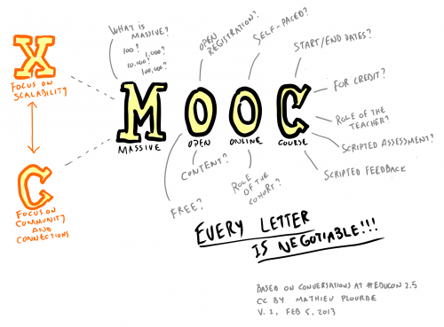
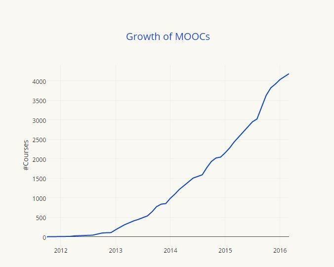

I Massive Open Online Courses (MOOCs) sono corsi online brevi e gratuiti a disposizione di tutti. Offrono la possibilità di interagire direttamente con il docente, organizzare gruppi di lavoro e mettere onestamente alla prova il proprio apprendimento. Il loro arrivo nel web ha originato una rivoluzione nel mondo dell’alta formazione, anche se i risultati conseguiti ad oggi non sempre hanno raggiunto le aspettative iniziali.

Se da una parte è stato accertato che un grandissimo numero di studenti non termina i MOOC iniziati perdendo l’entusiasmo, dall’altra questa forma di Social Learning permette di frequentare corsi e ottenere certificazioni da alcune delle più prestigiose università al mondo.
Vi chiederete quali sono le Università da tenere d’occhio per iniziare un MOOC.
Le migliori università che hanno aderito al movimento sono Caltech, Harvard, MIT, Stanford, Sorbonne, Peking, e ora anche Oxford. Le piattaforme di apprendimento internazionali hanno stretto relazioni con centinaia di Università,centri di ricerca e istituzioni per programmare i corsi (e che vi consigliamo di controllare)sono tantissime: Coursera e edX attualmente dominiano il mercato dei MOOC con rispettivamente il 35.6% e 18.1% dei corsi. Solo nel 2015 Coursera ha avuto 17 milioni di studenti!
In Italia le Università che si sono spese per l’avvio dei MOOC sono la Ca’ Foscari di Venezia l’Università di Roma, Il Politecnico di Milano - Polimi Open Knowledge e l’università di Napoli con Federica WebLearning. Le principali piattaforme italiane che ospitano i MOOC sono EMMA e EDUOPEN, il primo finanziato dall’Unione Europea e il secondo dal MIUR.
Dalle origini del Mooc a oggi

Nel 2008 Georg Siemens dell’Athabaska University conia il termine MOOC durante il convegno “Connectivism and Connective Knowledge”, solo 3 anni dopo i MOOC cominciano ad essere distribuiti su scala mondiale.
-
Nel 2011 la Stanford University lancia 3 corsi aperti a tutti coloro in possesso di una connessione internet. Uno di questi tenuto da Sebastian Thrun and Peter Norvig sul tema dell’Intelligenza artificiale attrasse più di 160.000 studenti. Sull’onda di quel successo Thun E Norvig costruirono il business model per l’educazione online Udacity
-
2012: La popolarità dei corsi della Stanford ha spinto altre Università a creare MOOC e così emersero altre due piattaforme: Coursera and EdX. Quell’anno The New York Times proclamò il 2012 ‘The Year of the Mooc’- l’articolo di FRIEDMAN è un MUST-READ sull’argomento.
-
2013: La Open University creò la sua personale piattaforma MOOC Futurelearn, offrendo corsi dalle università britanniche. Emersero altre piattaforme MOOC, come la Open2Study in Australia e iversity in Germania.
-
2014: Il numero di Università che offrivano MOOCS raddoppiò a più di 400.
-
2015: Il numero di studenti che si iscrivevano ai MOOC arrivò a 35 milioni, superando la previsione dei 16-18 milioni fatta per il 2014.
-
2016: L’università di Oxford annuncia il suo primo MOOC - From Poverty to Prosperity: Understanding Economic Development, un’adesione che aiuterà a rafforzare la credibilità dei MOOC.